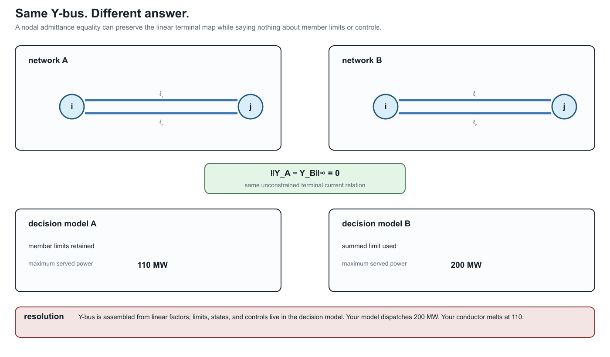
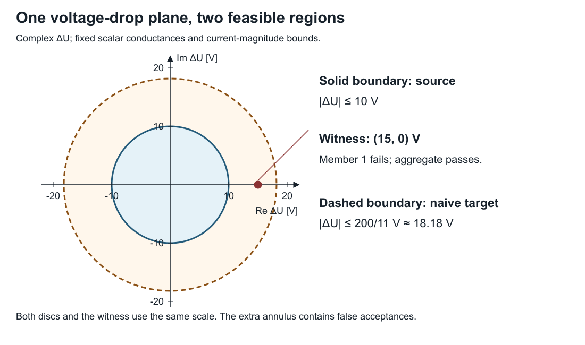

A first failure: heterogeneous parallel branches
Page status: introductory counterexample with executable scalar and multiconductor evidence; independent mathematical review remains open.
The tempting replacement
Here is the decision-level version of the same trap. Two models can have the same assembled nodal admittance and still answer a dispatch question differently:

The resolving phrase is which observations and constraints? The equality of the unconstrained terminal map is real; it simply does not include member ratings, outage states, or independent controls.
Consider two scalar resistive branches $\ell_1 i j$ and $\ell_2 i j$ with intrinsic impedances
\[Z_{\ell_1}=0.1\ \Omega,\qquad Z_{\ell_2}=1.0\ \Omega,\]
and member current limits
\[I^{\max}_{\ell_1}=I^{\max}_{\ell_2}=100\ \mathrm{A}.\]
Writing $\Delta U=U_i-U_j$ and $Y_{\ell}=Z_{\ell}^{-1}$, the terminal currents are
\[I_{\ell_k i j}=Y_{\ell_k}\Delta U,\qquad k\in\{1,2\}.\]
Here $k$ is a local member label for the two identified branches. It is not an instruction to use the first and second rows of a stored array; the member identity is $\ell_k$ and remains meaningful under any reordering.
Replacing the pair by one branch with
\[Y_{\mathrm{eq}}=Y_{\ell_1}+Y_{\ell_2}=11\ \mathrm{S}\]
is exact for the unconstrained total terminal-current relation. It does not follow that the replacement is exact for a decision problem with member limits.
The feasible sets differ
The source model requires both inequalities
\[|Y_{\ell_1}\Delta U|\le I^{\max}_{\ell_1},\qquad |Y_{\ell_2}\Delta U|\le I^{\max}_{\ell_2}.\]
Hence its admissible voltage-drop magnitude is
\[|\Delta U|\le \min\left\{\frac{I^{\max}_{\ell_1}}{|Y_{\ell_1}|}, \frac{I^{\max}_{\ell_2}}{|Y_{\ell_2}|}\right\} =10\ \mathrm{V}.\]
A common aggregate construction assigns the equivalent branch the summed rating, $I^{\max}_{\mathrm{eq}}=200\ \mathrm{A}$. It admits
\[|\Delta U|\le \frac{200}{11}=18.18\ \mathrm{V}.\]
At the witness $\Delta U=15\ \mathrm{V}$, the equivalent branch carries $165\ \mathrm{A}$ and satisfies its aggregate limit. Recovery gives
\[I_{\ell_1 i j}=150\ \mathrm{A},\qquad I_{\ell_2 i j}=15\ \mathrm{A},\]
so the source violates the $\ell_1$ limit. The target feasible set is therefore an outer relaxation of the source feasible set.

The figure is generated by experiments/render_parallel_feasible_set_card.py. For the scalar witness, the retained and aggregate regions are discs in the complex $\Delta U$ plane; the ellipse is the corresponding visual reminder for weighted or coupled quadratic limits.
Preservation contract
| Contract field | Value |
|---|---|
| source | two identified parallel branches with individual limits |
| target | one equivalent branch with summed admittance and rating |
| preconditions | common endpoints and voltage coordinates; linear branch laws |
| preserves | unconstrained total terminal current as a function of $\Delta U$ |
| does not preserve | the member-constrained feasible set |
| forgets | member identity and independent outage, maintenance, or investment state |
| recovery | $I_{\ell_k i j}=Y_{\ell_k}\Delta U$ if member admittances remain available |
| classification | outer/relaxed for this rating construction |
This counterexample does not say that parallel aggregation is never useful. It says that an aggregate rating needs its own derivation relative to the intended observation or decision set. Choosing a tighter equivalent limit can reproduce this one scalar voltage-drop bound, but it still does not recreate independent member states or arbitrary member-wise constraints.
Certified redundancy is different from aggregation
Some member limits can be removed exactly without replacing the physical members. For a fixed scalar AC $\pi$-line, write the endpoint-voltage state as
\[x= \begin{bmatrix} \Re(U_i)&\Re(U_j)&\Im(U_i)&\Im(U_j) \end{bmatrix}^{\mathsf T}.\]
After normalization by the applicable current or apparent-power rating, a flow limit at the $ij$ end has a positive-semidefinite quadratic feasible set
\[\mathcal E_{\ell i j}=\{x:x^{\mathsf T}M_{\ell i j}x\le1\}.\]
If $\mathcal E_{\ell_k i j}\subseteq\mathcal E_{\ell_r i j}$, satisfying member $\ell_k$'s limit implies member $\ell_r$'s limit at that end. Molzahn gives an eigenvalue-based containment test that also handles singular quadratic forms, whose feasible sets are cylinders rather than bounded ellipsoids [3]. A complete line-limit removal requires the implication at both $ij$ and $ji$ ends.
This is exact constraint pruning, not asset aggregation: both line laws, parameters, identities, and recovered flows remain in the model. Failure to identify redundancy is also not proof that a limit is essential; the test is a sufficient certificate. Its stated scope is fixed scalar AC transmission $\pi$-models, including fixed complex transformer ratios and shunts. It does not by itself cover arbitrary multiconductor constraint sets, switching, outages, investment states, or other state-dependent parameters. Claim LIT-PAR-001 records that boundary.
Multiconductor form
For multiconductor branches,
\[\mathbf I_{\ell_k i j}=\mathbf Y_{\ell_k}\Delta\mathbf U,\]
and the source feasible set is the intersection of the inverse images of every member constraint set:
\[\mathcal D_{\mathrm{src}}= \bigcap_k\left\{\Delta\mathbf U: \mathbf Y_{\ell_k}\Delta\mathbf U\in\mathcal C_{\ell_k}\right\}.\]
The summed terminal map $\mathbf Y_{\mathrm{eq}}=\sum_k\mathbf Y_{\ell_k}$ does not, by itself, encode that intersection. Mutual coupling and per-conductor limits make a single conventional rating still less likely to be an exact representation.
The generation script emits the numerical witness and its machine-readable contract as claim TR-PAR-001.
A decision problem exposes the gap
The same mechanism changes an optimum in a two-bus maximum-served-load model. Let the parallel members have
\[(b_{\ell_1},b_{\ell_2})=(1000,100)\ \mathrm{MW/rad},\qquad (F^{\max}_{\ell_1},F^{\max}_{\ell_2})=(100,100)\ \mathrm{MW},\]
with $F_{\ell i j}=b_\ell\delta_{ij}$, nonnegative $\delta_{ij}$, and served power equal to total flow. The source model keeps both member laws and both limits. The naïve target uses $b_{\mathrm{eq}}=1100$ MW/rad and $F^{\max}_{\mathrm{eq}}=200$ MW.
| Formulation | Maximum served power | $\delta_{ij}$ | Active restriction |
|---|---|---|---|
| source members | 110 MW | 0.1 rad | $F_{\ell_1 i j}\le100$ MW |
| naïve aggregate | 200 MW | $2/11$ rad | summed 200 MW rating |
| aggregate relation with exact lifted member constraints | 110 MW | 0.1 rad | recovered $F_{\ell_1 i j}\le100$ MW |
The displayed exact lifted formulation retains every member law and both member limits:
\[F_{\ell i j}=b_\ell\delta_{ij},\qquad F_{\ell i j}\le F^{\max}_\ell \quad\text{for every }\ell,\]
alongside the aggregate terminal relation. It therefore reproduces the source feasible set and optimum without pretending that a summed scalar rating is exact. This computed comparison is claim TR-PAR-003. JuMP and Ipopt produce the machine-readable result in experiments/generated/parallel-opf-comparison.json; the analytic values above also provide a solver-independent check.
Here $b_{\ell_2}=0.1b_{\ell_1}$ and the ratings are equal, so the $\ell_2$ limit is actually implied by the $\ell_1$ limit and can be certifiably pruned. Keeping both in the table isolates the lifting argument from presolve; the next case implements the pruned formulation explicitly.
The Multiconductor parallel AC decision case extends this comparison to coupled complex conductor equations, phase-to-neutral constant power, and voltage-magnitude constraints.